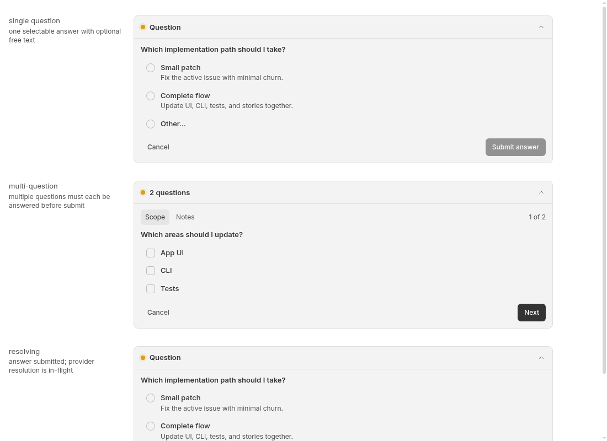

Hidden threads are excluded from pending favicon attention
Bug · High priority · High effort · threads, ui, workflows · 2026-09-30
PARTIALLY REPRODUCED · High confidence in the tested attention-selector behavior.
Claim and tested scope
A hidden root thread waiting for an ordinary question is reported to have no app-wide indication. A focused test of the production favicon selector confirms that an otherwise read, pending root thread contributes attention when visible, but contributes none when hidden. The same agent repeated this in a second clean checkout at the identical base. A real Chromium capture separately verifies that the existing ordinary-question component renders when mounted locally.
The test supplies hasPendingInteraction: true; it does not create or persist a question through the server. The selector is interaction-kind agnostic. No approval policy, provider, Workflows run, real user runtime or account was exercised. The screenshots show a component story, not the complete app or evidence of missing global notification. Full question creation, thread-list transport, actual favicon display, all app-wide notification surfaces, and the reported waiting duration remain unverified. This is why the verdict is partial.
Environment
Public trusted origin/main: 49fe15af52972d5dd27ce4df430db205213de6ff. Linux x86_64, Node 24.19.0, pinned pnpm 9.15.0 via Corepack, Turbo 2.10.12, Vitest 4.1.1, desktop headless Chromium 151.0.7922.173 at 1100×800 CSS pixels. This is not Android or mobile verification.
Both detached worktrees began clean, then received the identical test/configuration patch. Both frozen installs and app builds exited 0. The second build used --force; both test commands used --force. Dependency downloads were shared, but each checkout had its own node_modules, writable caches, browser profile and local server port. App build: three successful tasks in each run. First/second Ladle ports: 49091/49093; browser debugging ports: 49092/49094. The test-only Ladle configuration restricts stories to ordinary questions and removes the development API proxy, preventing contact with any BB runtime.
Exact steps
Use the repository-pinned package manager. Ensure subprocess pnpm resolves to 9.15.0; this environment used a task-local Corepack shim. On systems with read-only defaults, use writable disposable Corepack/npm/native-build caches and a pnpm --store-dir. No dependency was added or changed.
git clone https://github.com/get-bb/bb.git bb-repro cd bb-repro git checkout --detach 49fe15af52972d5dd27ce4df430db205213de6ff corepack pnpm install --frozen-lockfile # Save the inline patch below as regression.patch outside the checkout. git apply ../regression.patch corepack pnpm exec turbo run build --filter=@bb/app --force corepack pnpm exec turbo run test --filter=@bb/app --force -- src/components/layout/faviconAttentionDot.test.ts
Repeat the same patch and commands personally in another clean clone at the same SHA. Expect the hidden-case assertion to fail and the visible control plus ten existing tests to pass.
Visual capture
# In a terminal rooted at apps/app: corepack pnpm exec ladle serve --port 49091 --host 127.0.0.1 # In another terminal, use a fresh disposable Chromium profile: chromium --headless --no-sandbox --disable-dev-shm-usage --remote-debugging-address=127.0.0.1 --remote-debugging-port=49092 --user-data-dir="$(mktemp -d)" about:blank # Save the inline capture script as capture.mjs and run: node capture.mjs 49092 49091 first-question # Repeat in a second clean checkout, with new profile and ports 49093/49094: node capture.mjs 49094 49093 second-question
The Chromium sandbox flag above was used only in this isolated container for the trusted local story. The two browser captures were made personally by the same agent using separate profiles. No response was submitted to a server.
Expected and actual
Expected under the requested behavior: pending root-thread attention remains discoverable regardless of hidden sidebar visibility. Actual selector results below: visible true, hidden false. Read-state timestamps deliberately mark the fixture read, so unread activity does not explain the difference.
First clean run — exit 1
{"visibility":"visible","pending":true,"unread":false,"parent":null,"actual":true}
{"visibility":"hidden","pending":true,"unread":false,"parent":null,"actual":false}
AssertionError: expected false to be true // Object.is equality
Tests 1 failed | 11 passed (12)Second clean run — exit 1
{"visibility":"visible","pending":true,"unread":false,"parent":null,"actual":true}
{"visibility":"hidden","pending":true,"unread":false,"parent":null,"actual":false}
AssertionError: expected false to be true // Object.is equality
Tests 1 failed | 11 passed (12)The visible control passed in both runs. Each run produced one failed and eleven passed tests. The second run required no change to the tested selector claim; the report deliberately limits the overall verdict to partial reproduction.
Genuine visual evidence: local question rendering only
These unmodified screenshots show the existing production ordinary-question banner in its synthetic component story. They establish local renderability, not global discovery or missing notification.


Cause and uncertainty
The favicon predicate gates pending interactions on sidebar eligibility, which excludes hidden threads. Thus even supplying the hidden pending row to the selector does not light attention. Separately, source inspection shows that the blocked-child notification helper returns for root threads with no parent; that server path was not dynamically tested here. The inspected code supports the reported discovery gap, but these isolated checks do not prove the absence of every other notification surface.
- Pending attention requires sidebar eligibility
- Home/non-thread view evaluates only eligible pending or unread entries
- Sidebar eligibility excludes hidden visibility
- Parent-notification early return, source inspection only
- Parent eligibility requires a parent ID
- Existing ordinary-question synthetic fixture
Proposed direction and next test
Keep hidden threads out of ordinary sidebar organization while exposing pending ordinary questions through an app-wide attention source and a route to the existing question UI. Product decisions are needed about grouping and lifecycle owners. Next, use a synthetic isolated server to register a user_question on a hidden root thread, navigate away, and verify discovery and resolution end to end. No production change or PR was created.
Complete test/configuration patch
diff --git a/apps/app/.ladle/config.mjs b/apps/app/.ladle/config.mjs
index 5c681fee6..edb111c1d 100644
--- a/apps/app/.ladle/config.mjs
+++ b/apps/app/.ladle/config.mjs
@@ -1,67 +1 @@
-import { networkInterfaces } from "node:os";
-
-function formatNetworkUrls(serverUrl) {
- const parsedUrl = new URL(serverUrl);
- const path = `${parsedUrl.pathname}${parsedUrl.search}${parsedUrl.hash}`;
- const interfaces = networkInterfaces();
- const addresses = [];
- const seenAddresses = new Set();
-
- for (const [name, entries] of Object.entries(interfaces)) {
- for (const entry of entries ?? []) {
- if (
- entry.family !== "IPv4" ||
- entry.internal ||
- seenAddresses.has(entry.address)
- ) {
- continue;
- }
-
- seenAddresses.add(entry.address);
- addresses.push({ address: entry.address, name });
- }
- }
-
- addresses.sort((left, right) => {
- const leftIsTailscale = left.name.startsWith("tailscale") ? 0 : 1;
- const rightIsTailscale = right.name.startsWith("tailscale") ? 0 : 1;
- return leftIsTailscale - rightIsTailscale;
- });
-
- return [
- `[storybook] Local: ${parsedUrl.protocol}//localhost:${parsedUrl.port}${path}`,
- ...addresses.map(
- (entry) =>
- `[storybook] Network: ${parsedUrl.protocol}//${entry.address}:${parsedUrl.port}${path} (${entry.name})`,
- ),
- ];
-}
-
-/** @type {import("@ladle/react").UserConfig} */
-export default {
- stories: [
- "src/**/*.stories.tsx",
- "../../plugins/automations/*.stories.tsx",
- "../../plugins/workflows/**/*.stories.tsx",
- "../../plugins/provider-usage/*.stories.tsx",
- ],
- defaultStory: "",
- viteConfig: "./.ladle/vite.config.ts",
- host: "0.0.0.0",
- // Ladle defaults Vite HMR to localhost independently of `host`.
- // Empty string keeps Vite's websocket listener non-loopback and lets
- // the browser use the page hostname for the websocket URL.
- hmrHost: "",
- addons: {
- theme: {
- defaultState: "dark",
- },
- },
- onDevServerStart(serverUrl) {
- if (new URL(serverUrl).hostname !== "0.0.0.0") {
- return;
- }
-
- process.stdout.write(`${formatNetworkUrls(serverUrl).join("\n")}\n`);
- },
-};
+export default { stories: ["src/components/thread/pending-interactions/ThreadPendingInteractionUserQuestion.stories.tsx"], viteConfig: "./.ladle/vite.config.ts", host: "127.0.0.1", addons: { theme: { defaultState: "light" } } };
diff --git a/apps/app/.ladle/vite.config.ts b/apps/app/.ladle/vite.config.ts
index 97aaa8159..71ed3f1c3 100644
--- a/apps/app/.ladle/vite.config.ts
+++ b/apps/app/.ladle/vite.config.ts
@@ -1,16 +1,9 @@
import path from "path";
import { defineConfig } from "vite";
import tailwindcss from "@tailwindcss/vite";
-import { resolveCurrentDevInstanceConfig } from "@bb/config/runtime";
import { forkablePluginPaths } from "../vite-forkable-plugin-paths.js";
import { sharedUiEnvSeam } from "../vite-shared-ui-seam.js";
-const repoRoot = path.resolve(__dirname, "../../..");
-const devInstance = resolveCurrentDevInstanceConfig(repoRoot);
-const trustedDevAppHeaders = {
- origin: devInstance.serverUrl,
-};
-
export default defineConfig({
plugins: [
forkablePluginPaths(path.resolve(__dirname, "../src")),
@@ -36,20 +29,5 @@ export default defineConfig({
},
},
},
- server: {
- allowedHosts: [".getbb.app"],
- proxy: {
- "/api": {
- target: devInstance.serverUrl,
- changeOrigin: true,
- headers: trustedDevAppHeaders,
- },
- "/ws": {
- target: devInstance.serverUrl,
- changeOrigin: true,
- ws: true,
- headers: trustedDevAppHeaders,
- },
- },
- },
+ server: { host: "127.0.0.1" },
});
diff --git a/apps/app/src/components/layout/faviconAttentionDot.test.ts b/apps/app/src/components/layout/faviconAttentionDot.test.ts
index 73c91c22b..e39c49005 100644
--- a/apps/app/src/components/layout/faviconAttentionDot.test.ts
+++ b/apps/app/src/components/layout/faviconAttentionDot.test.ts
@@ -28,6 +28,20 @@ const BASE_ARGS = {
};
describe("shouldShowFaviconAttentionDot", () => {
+ it.each(["visible", "hidden"] as const)("surfaces a %s root thread waiting for an ordinary question (4407)", (visibility) => {
+ const thread = makeSidebarThread({
+ visibility,
+ parentThreadId: null,
+ originKind: null,
+ hasPendingInteraction: true,
+ lastReadAt: 30,
+ latestAttentionAt: 20,
+ });
+ const actual = shouldShowFaviconAttentionDot({ ...BASE_ARGS, sidebarThreads: [thread] });
+ process.stderr.write(JSON.stringify({ visibility, pending: true, unread: false, parent: null, actual }) + "\n");
+ expect(actual).toBe(true);
+ });
+
it("ignores unread side-chat threads hidden from the sidebar", () => {
expect(
shouldShowFaviconAttentionDot({
Complete browser capture script
import { writeFile } from 'node:fs/promises';
const [debugPort,appPort,output]=process.argv.slice(2);
const tabs=await(await fetch(`http://127.0.0.1:${debugPort}/json/list`)).json();
const ws=new WebSocket(tabs.find(t=>t.type==='page').webSocketDebuggerUrl);
await new Promise(r=>ws.addEventListener('open',r,{once:true}));let id=0;const pending=new Map();
ws.addEventListener('message',event=>{const x=JSON.parse(event.data);if(x.id){const p=pending.get(x.id);pending.delete(x.id);x.error?p.reject(new Error(JSON.stringify(x.error))):p.resolve(x.result);}});
const call=(method,params={})=>new Promise((resolve,reject)=>{const serial=++id;pending.set(serial,{resolve,reject});ws.send(JSON.stringify({id:serial,method,params}));});
const evaluate=async expression=>(await call('Runtime.evaluate',{expression,returnByValue:true,awaitPromise:true})).result.value;
await call('Page.enable');await call('Runtime.enable');await call('Emulation.setDeviceMetricsOverride',{width:1100,height:800,deviceScaleFactor:1,mobile:false});
await call('Page.navigate',{url:`http://127.0.0.1:${appPort}/?story=thread--pending-interaction--user-question--overview&mode=preview&theme=light`});
let body='';for(let i=0;i<100;i++){await new Promise(r=>setTimeout(r,300));body=await evaluate('document.body.innerText');if(body.includes('single question')&&body.includes('resolving'))break;}
await new Promise(r=>setTimeout(r,700));
const buttons=await evaluate('Array.from(document.querySelectorAll("button")).map(b=>({text:b.textContent,aria:b.getAttribute("aria-label")}))');
const shot=await call('Page.captureScreenshot',{format:'png',captureBeyondViewport:false});await writeFile(output+'.png',Buffer.from(shot.data,'base64'));
const result={browser:await call('Browser.getVersion'),body:await evaluate('document.body.innerText'),buttons};await writeFile(output+'.json',JSON.stringify(result,null,2));console.log(JSON.stringify(result));ws.close();
Verification, provenance and publication
This is the same agent's second clean reproduction, not independent verification. Both test outputs and browser captures were inspected. Image contents are synthetic and contain no private account data. Issue-provided commands, patches, branches, external URLs and attached images were not executed or fetched. The closed unmerged PR #4408 was read only as metadata and was not checked out. No equivalent report existed during preparation.
Only the HTML, two PNG screenshots and report metadata are published. Raw logs remain local; all repeatable code and relevant outputs are inline. The repository references a publisher script but none is tracked; direct checks cover privacy, artifact existence, permalink ranges and evidence consistency. The generated index is not edited by hand.
AGENT GENERATED